<!DOCTYPE html>
<html>
  

	  <!-- link the webpage's stylesheet -->
	  <link rel="stylesheet" href="style.css" />

	  <!-- link the webpage's JavaScript file -->
	  <script src="script.js" defer></script>

  

    

</html>


<body>
  
  <div id="intro">
    <header>
      <title>Kamila Nieto</title>
      <h1>Kamila Nieto</h1>
    </header>
  </div>
  
  <nav>
    <ul>
      <li>
        <a href="index">Home</a>
      </li>
      <li>
        <a href="portfolio">Portfolio</a>
      </li>
    </ul>
  </nav>

  <main>
<p id="bio"> Welcome to my website! I am currently a junior at Butler Tech studying IT, and plan on going to college for computer science to become a software engineer. I am a web designer and currently run my own business! I enjoy reading, playing violin, and learning new skills. I speak English and Spanish. I know HTML, CSS, Javascript, Python, and I am currently learning C#. Feel free to check out my portfolio to get a more in-depth look into my hobbies and interests or contact me at <a href="mailto:nietokamila329@gmail.com"> nietokamila329@gmail.com </a> with any questions!
</p>

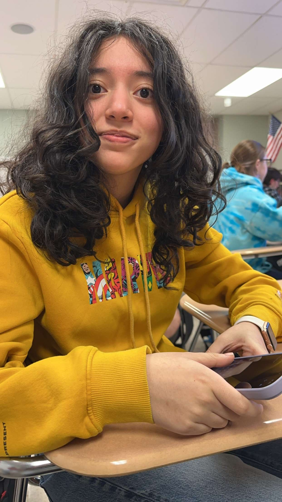
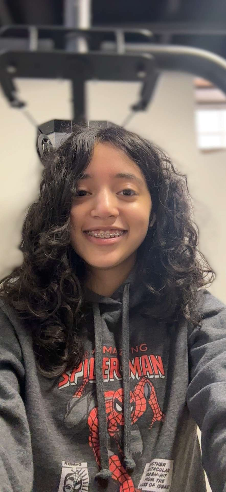
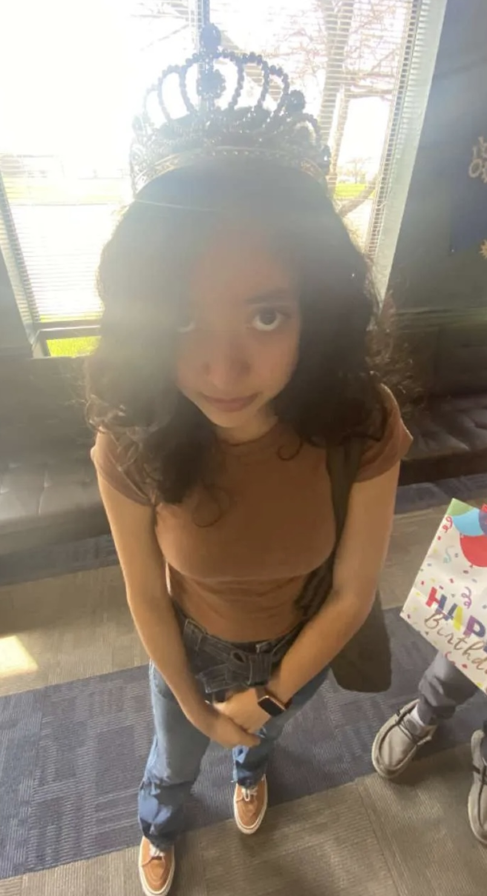
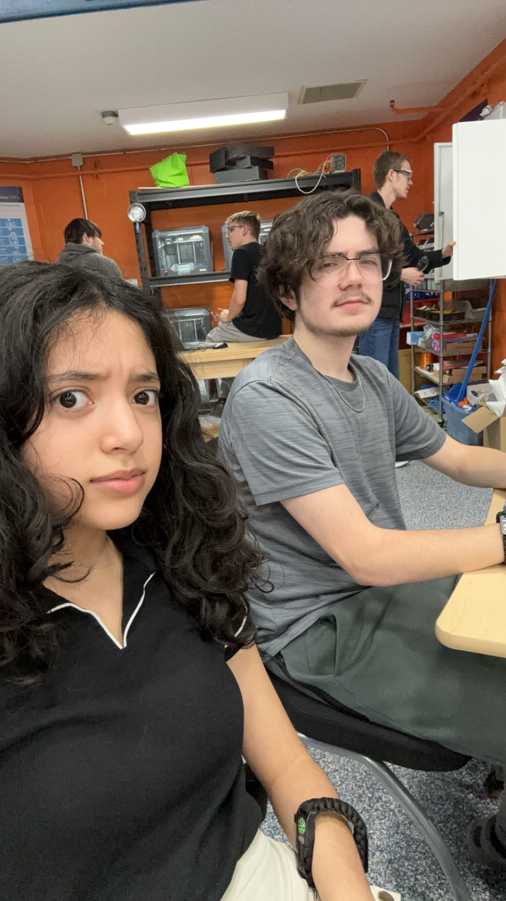
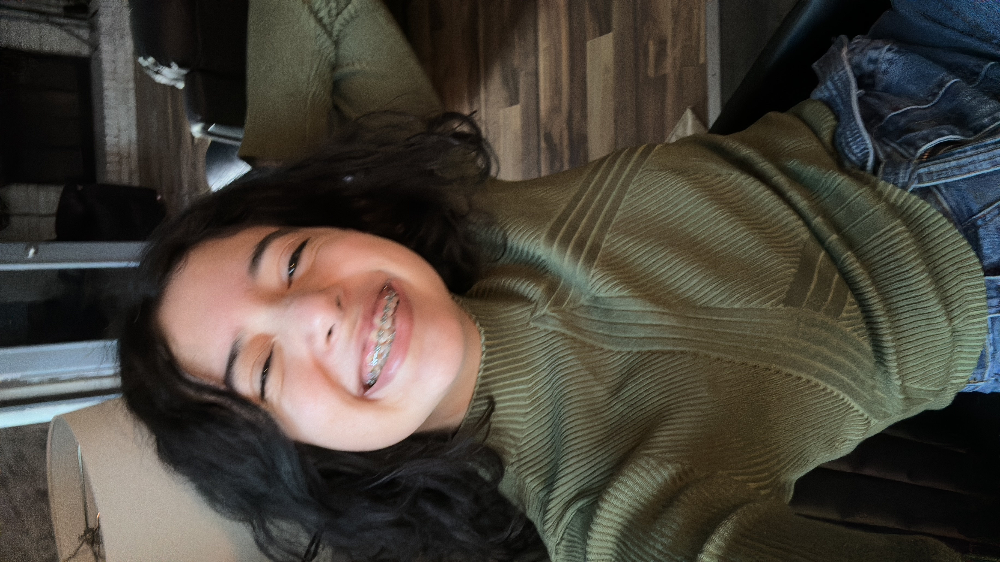
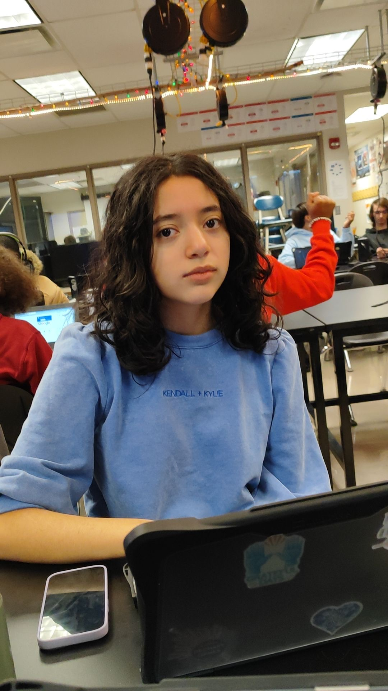
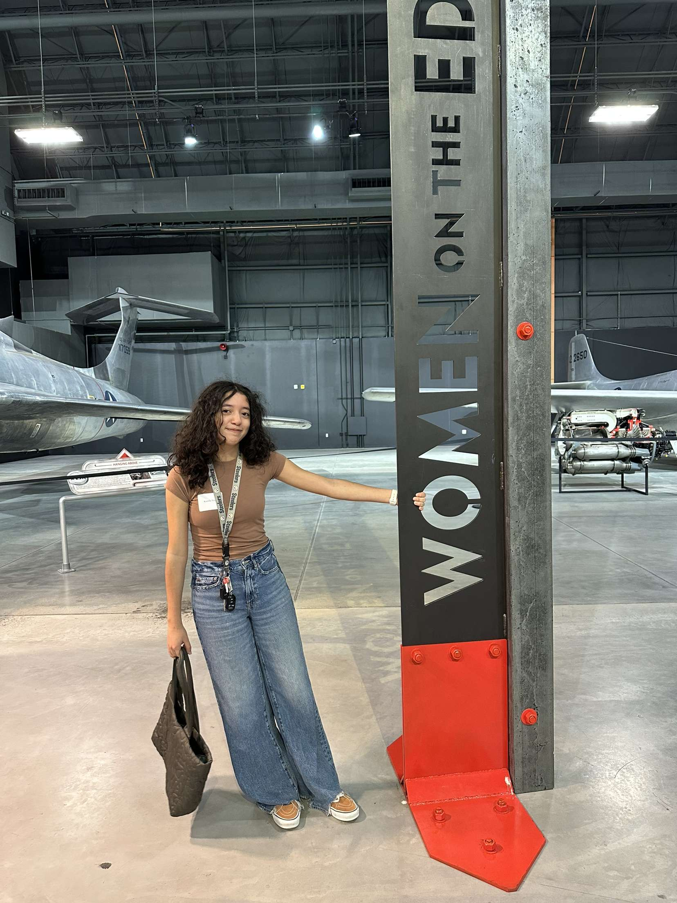
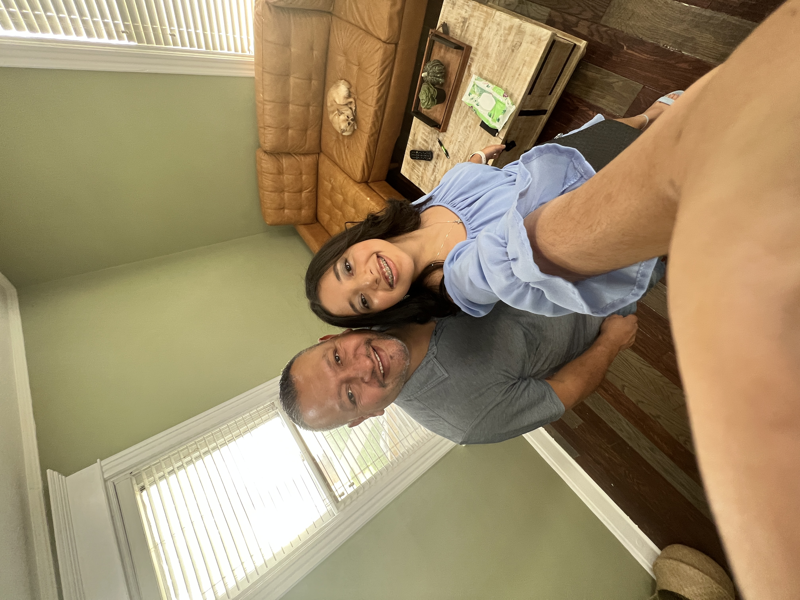
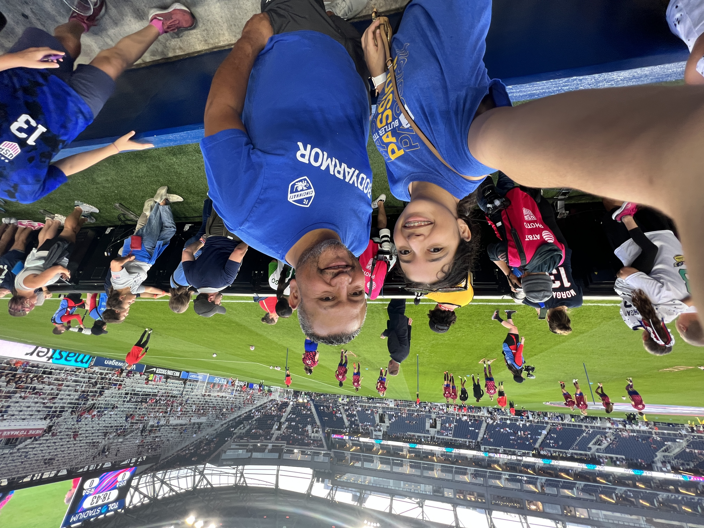
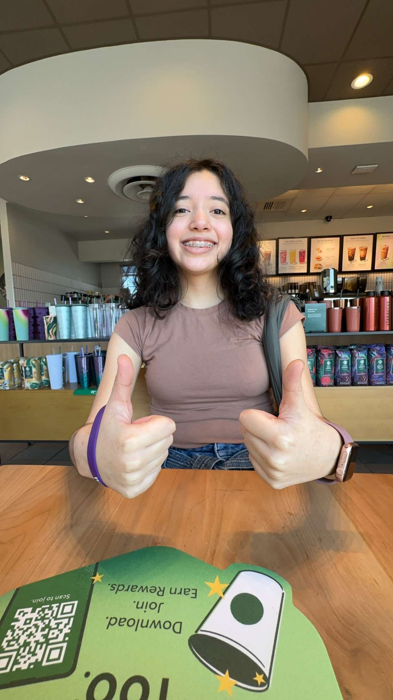
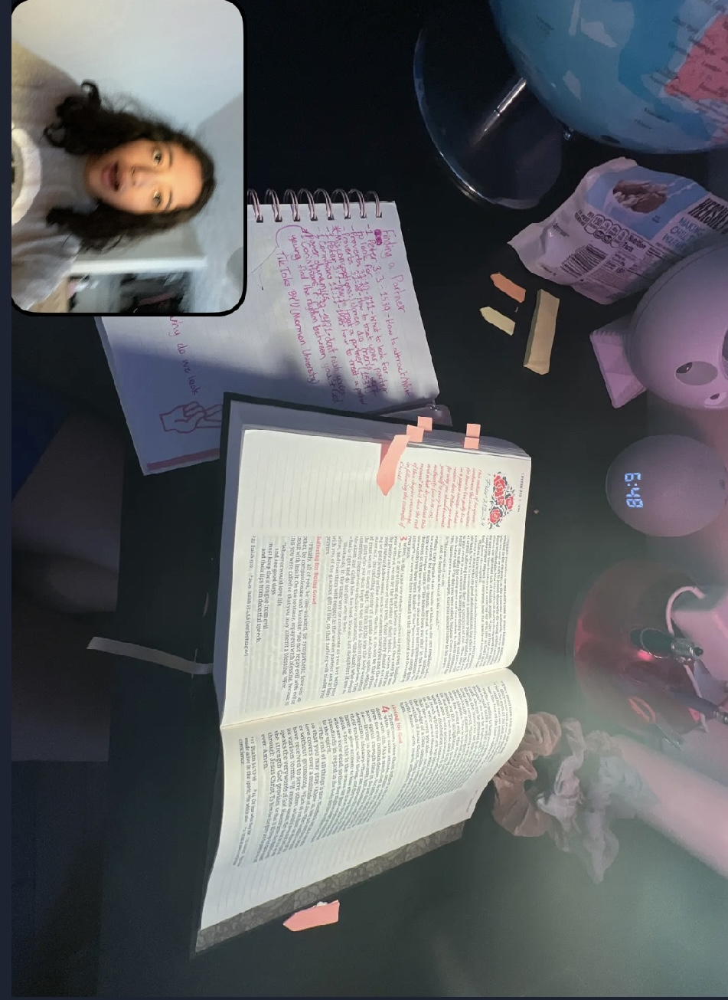
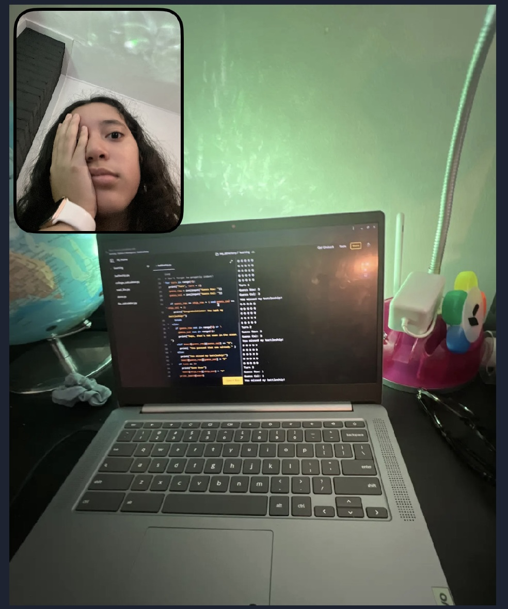
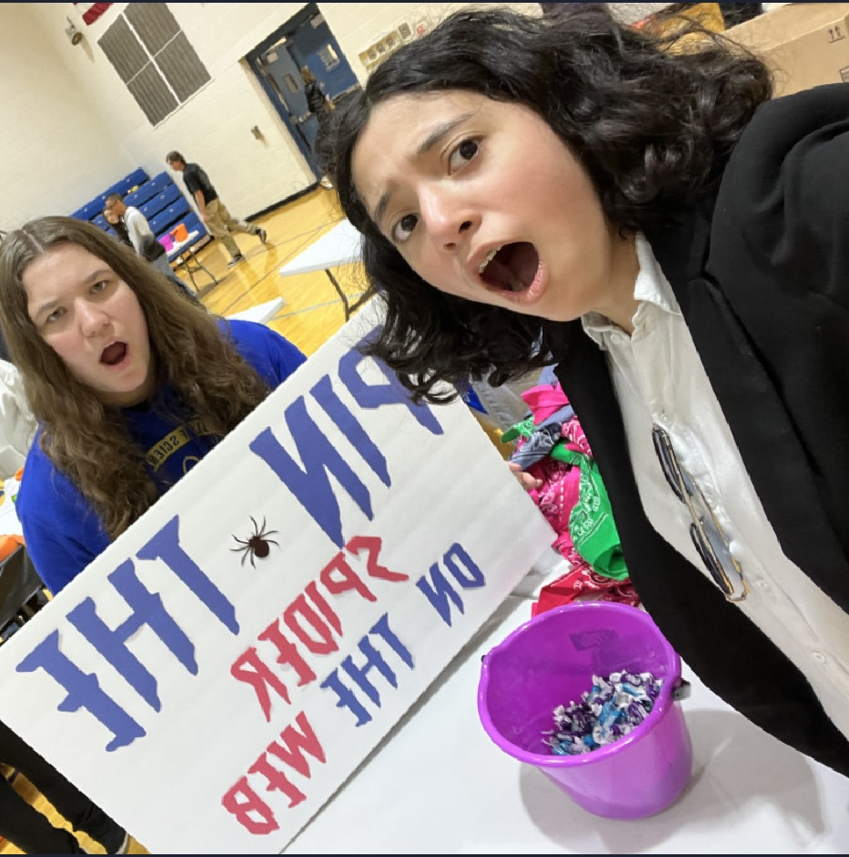
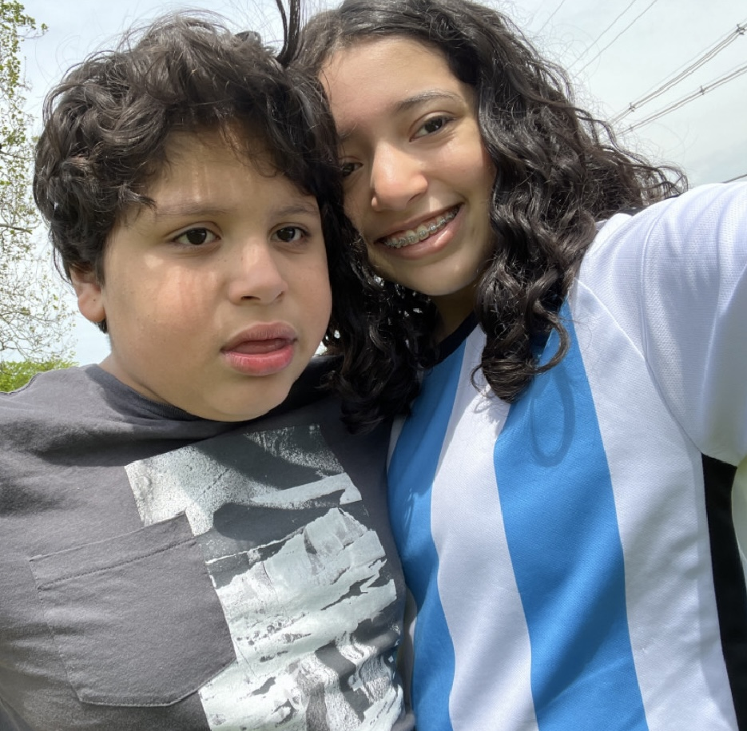
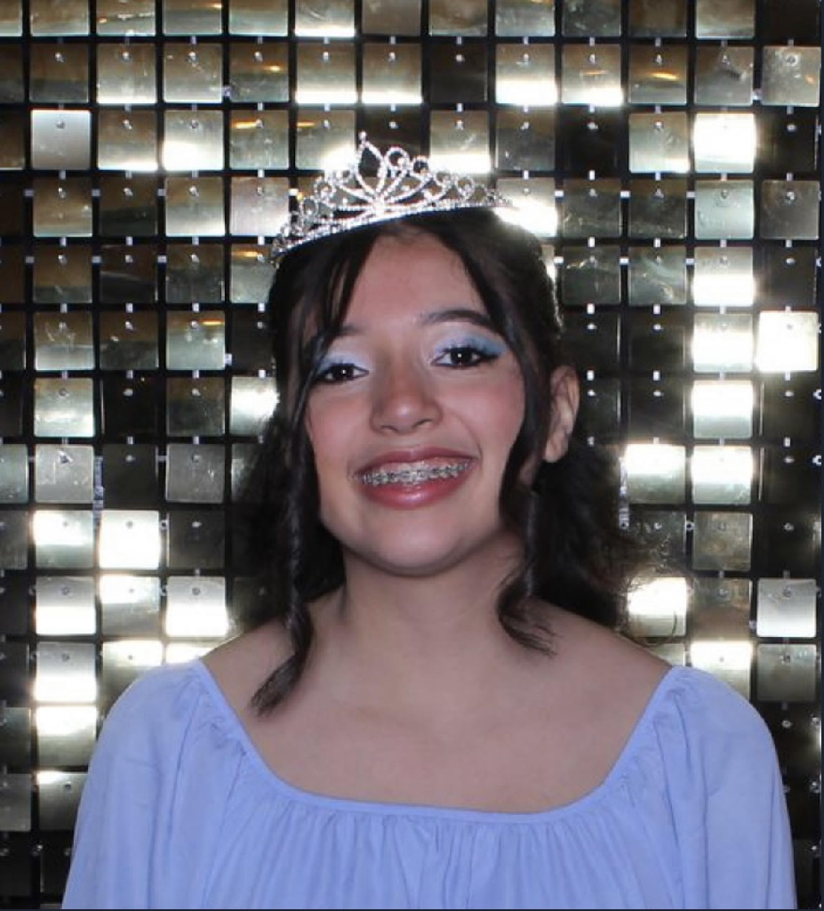
       
  </main>
  
</body>
</html>
